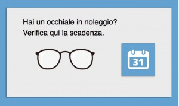

Ma gli occhiali che noleggio, sono nuovi?
Si! Sempre assolutamente NUOVI e di prima mano. Il servizio prevede che tu possa fare le stesse scelte di sempre. Scegli la montatura NUOVA e della marca che più ti piace e lasciati consigliare sul tipo di lenti (nuove, su misura, di qualunque tipo e tecnologia) più adatte alla tua esigenza. Alcuni Ottici affiliati, potrebbero esporre in un’area ben identificabile, alcune montature rigenerate, destinate ad un pubblico meno esigente e raffinato. In quest’area verranno esposte le montature riconsegnate in eccellenti condizioni. Queste verranno attentamente selezionate, igienizzate, sterilizzate e poste su una rastrelliera dedicata e separata dal nuovo, per permettere anche alle persone con maggiori difficoltà economiche, di risparmiare ancora di più.
E se graffio le lenti?
Se alla riconsegna le lenti saranno graffiate non dovrai pagare nulla poiché il noleggio include una copertura danni di questo livello.
E se graffio la montatura?
Se alla riconsegna la montatura risulterà usurata non dovrai pagare nulla poichè il noleggio include una copertura danni di questo livello.
E se si distrugge l’occhiale prima dell’anno, ad esempio a mio figlio?
Ecco un altro vantaggio/beneficio del Servizio Affittasi Occhiali: anziché dover riacquistare un occhiale a prezzo pieno, come accadeva un tempo, con il nostro Servizio di noleggio la copertura danni prevede il versamento di solo una franchigia del 10% sul prezzo pieno. Il contratto si chiude e potrai aprire un nuovo noleggio scegliendo un nuovo paio di occhiali e lenti. Un considerevole risparmio in famiglia in questi casi estremi!
E se rinnovo lo stesso occhiale il secondo anno?
Se la montatura ti piace ancora, è in perfette condizioni e le lenti sono ancora adatte alla tua vista, in caso sceglierai di rinnovare lo stesso occhiale per un secondo anno verserai una quota di noleggio pari al primo anno.
E il terzo anno cosa accade se rinnovo sempre lo stesso occhiale?
Verserai una quota di noleggio come l’anno precedente e a scadenza con solo 1 euro l’occhiale sarà tuo.
Mi conviene di più riscattare l’occhiale o cambiarlo?
Dipende da caso a caso e dipende dal valore della montatura noleggiata. La quasi totalità delle persone che hanno ad oggi noleggiato hanno rinnovato tutto l’occhiale, altre hanno rinnovato un secondo anno lo stesso occhiale (poichè in ottime condizioni) per poi dichiarare la volontà di cambiarlo alla seconda scadenza. Pochi ad oggi hanno riscattato l’occhiale alla prima scadenza … alcuni tra questi hanno riscattato la montatura e rinnovato il noleggio cambiando le lenti, magari con delle multifocali. Il Servizio è flessibile.
E se non lo riporto tra un anno?

Noi te lo ricorderemo almeno 3 volte (SMS, eMail, Telefono) con 10 giorni di anticipo sulla scadenza. Dal 8° giorno di ritardo rispetto la data di scadenza, ti sarà conteggiato un mese in più di noleggio. Al 30° giorno di mancato rientro ti giungerà una diffida legale e dopo qualche giorno scatterà la denuncia per “appropriazione indebita” presso le Autorità competenti secondo quanto previso dalla Legge, Art 646 del Codice Penale. Se prima della prevista scadenza l’Ottico viene avvisato di un eventuale breve ritardo per cause di forza maggiore coincidenti con tale data (a titolo d’esempio: malattia, trasferta lavorativa, settimana di vacanza), il suddetto procedimento viene sospeso, ma non interrotto. Si consiglia di anticipare di una settimana la visita dall’ottico poichè in caso di Rinnovo di noleggio con un nuovo occhiale, bisogna tener conto dei tempi di fabbricazione e consegna.
E se mi trasferisco di città?
Se ti trasferisci in una città dove è presente un Ottico affiliato al Servizio Affittasi Occhiali, il contratto su tua richiesta potrà essere trasferito presso il nuovo Ottico professionista. Diversamente potrai andare dal tuo Ottico e riscattare l’occhiale pagando la differenza tra il prezzo di vendita e il prezzo di noleggio annuale.

Posso verificare io la scadenza?
Certo. In ogni momento dal sito del servizio nazionale www.affittasiocchiali.it o tramite il nostro sito (dalla homepage) potrai verificare la tua data di scadenza e poi inserendo nell’apposito campo il tuo codice fiscale otterrai la data di scadenza. In totale rispetto della privacy non saranno visualizzati i tuoi dati, ma solo la data di scadenza e il nome dell’Ottico.
Cosa ne fate del mio occhiale usato?
Semplice: alcuni li rendiamo in fabbrica affinchè le materie prime vengano riciclate; le montature migliori, quelle perfette, saranno selezionate, igienizzate, sterilizzate e posti su una rastrelliera dedicata e separata dal nuovo per offrire un prodotto perfetto a più basso alle persone che hanno necessità di risparmiare ancora di più… naturalmente le lenti che saranno montate su queste montature saranno nuove di zecca e fabbricate sulla base della ricetta che ha il cliente (Attenzione: l’occhiale usato da una sola persona e dall’Ottico sterilizzato è indiscutibilmente più sicuro ed igienico di una posata che usiamo al ristorante o di un letto d’albergo, usati da migliaia di persone); tutte gli altri occhiali saranno ugualmente igenizzati e sterilizzati per essere destinati alla Banca dell’Occhiale per un progetto di solidarietà internazionale verso le popolazioni del terzo e quarto mondo.